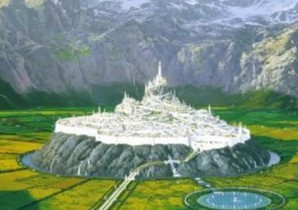
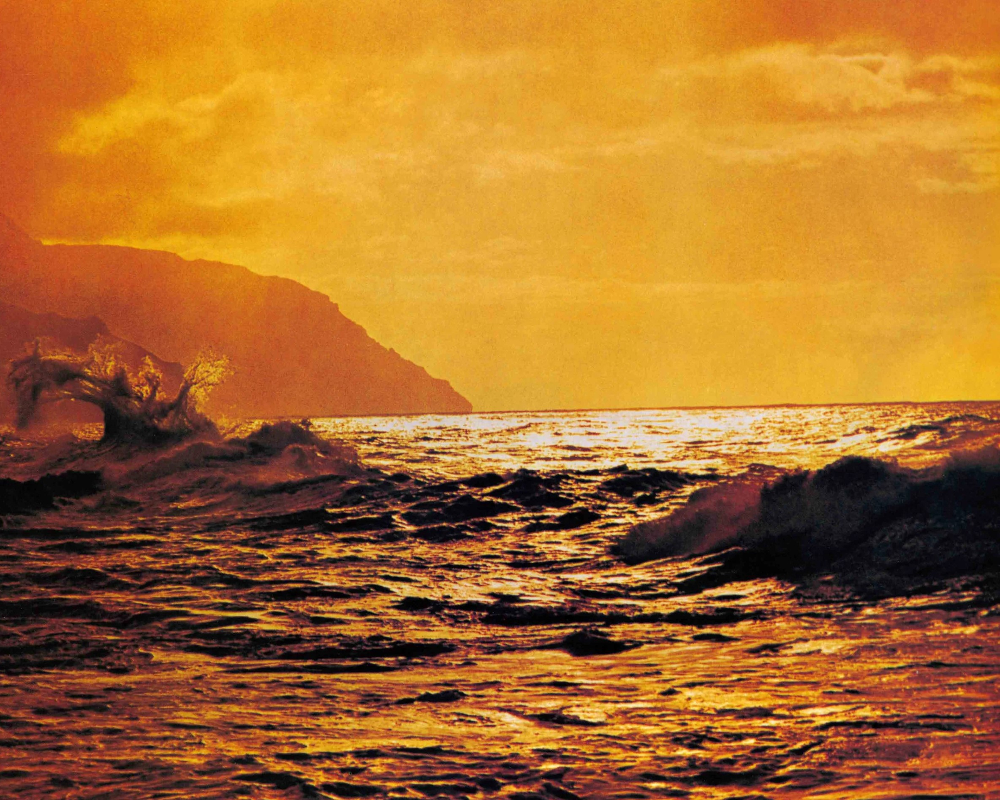

Lemúria lelőhelye
Lemúrira, mint elsüllyedt kontinensre, az Indiai-óceán környékén került először szó, és a XIX. századi tudósok vetették fel a létezésének gondolatát. A lemúriás legendák szerint Lemúria a földközi-tengeri térségben, az Atlanti-óceánban és az Indiai-óceánban is, egyaránt elsüllyedt.
A lemúriai közösség
Míg atlantisziak magas műszaki tudású, rafinált, birodalomalkotó nép volt, akik városokat, lenyűgöző közműveket építettek, szerették a gazdagságot, a hatalmat, a kultúrát és a terjeszkedést, addig A lemúriaiakat nem vonzották ezek az értékek. Ők is tengerészek voltak, mint az atlantisziak, de ezzel véget is ért a hasonlóság.
A lemúriaiak főleg azért hajóztak el más földekre, hogy terjesszék hitük alapelveit. Nem volt tengerészetük, nem voltak hadseregeik, nem volt katonaságuk. Építettek kultikus központokat, de városokat nem. A termékeny vulkáni talaj es a trópusi éghajlat kedvezett a mezőgazdaság kialakulásának. Virágzott a növénytan, a gyógyfüvek ismerete olyan fejlett volt, amit azóta se haladtunk meg.
A lemúriaiak apró falvakban éltek; fűből és fából építettek szerény házakat a kőből rakott, hatalmas kultikus központok köré, amelyek úgyszólván kivétel nélkül a tenger vagy valamilyen folyó partján álltak. A társadalmi élet céljára szolgáló kultuszhelyek széles tereiről hatalmas, tömör lépcsők vezettek fel magas teraszokra, ahol azóta elporladt kisebb templomok álltak.
A lemúriaiak szellemi élete
A lemúriaiakat nem nagyon érdekelte a bel-, vagy külkereskedelem, egyáltalán semmiféle gazdagság. Mu népét elsősorban a gyógyítás és a lelki tökéletesedés foglalkoztatta. Kiterjedt vallási közösséget alkottak ‚egyetlen szellemi vezető irányításával, akit egy szent sorozatosan testet öltő léleknek tartottak.
Ennek a teokratikus személyiségnek, akire a lakosság az istennek kijáró áhítattal tekintett, alá volt rendelve a beavatottak papi testülete, akik olyan szelíden és olyan ritkán gyakorolták a politikai hatalmat. Lemúriában nem volt állam, nem törvények irányítottak, hanem a nemzeti etika.
A bűn ismeretlen fogalom volt, tehát nem léteztek börtönök, sem rendőrség, sem halálbüntetés. Volt egy nagyon kis létszámú csapat, amelynek tagjai részidőben látták el a feladatuat, és kizárólag a szellemi vezetőnek és papjainak tartoztak felelősséggel, szükség esetén ők bíráskodtak. A garázdákat, tolvajokat, hazugokat intenzív vallási képzésnek vetették alá, lelki habitusuk módosításának céljából. A komolyabb eseteket – a visszaesőket, verekedőket vagy gyilkosokat – örökre száműzték távoli, barbár földekre.